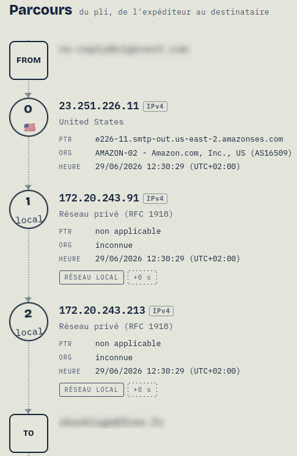
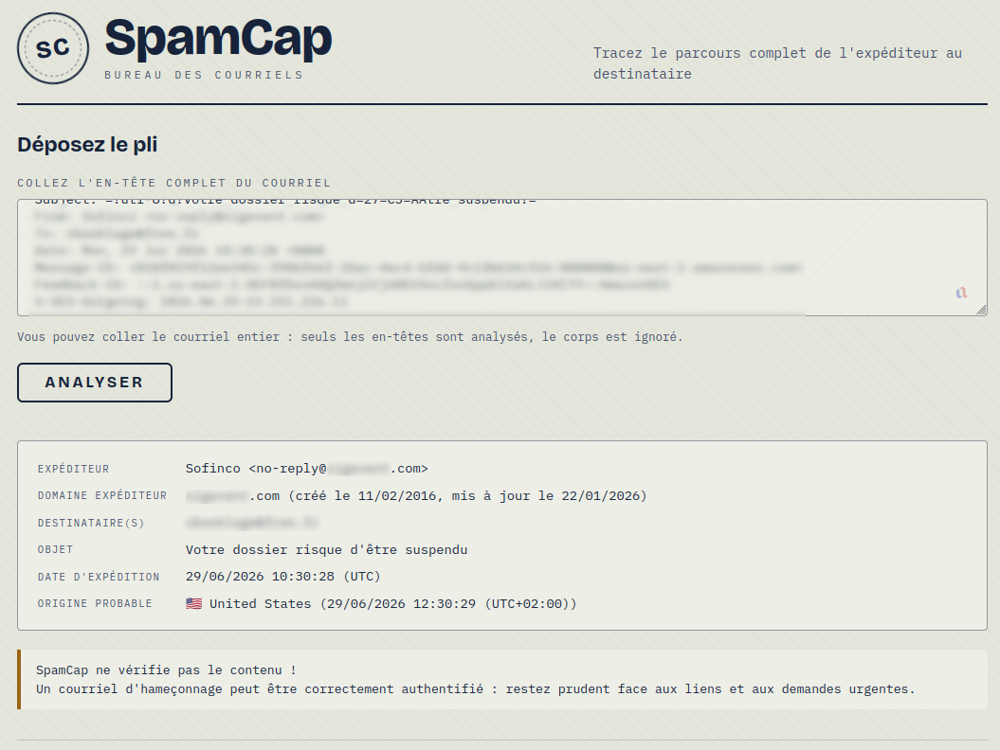

Expertise d'en-têtes, en local
Tracez le parcours d'un courriel, et repérez ce qui cloche.
Collez l'en-tête brut d'un message reçu. SpamCap reconstitue son trajet, serveur par serveur, géolocalise chaque saut et signale les usurpations lisibles dans les en-têtes. Le corps n'est jamais transmis, aucun courriel n'est conservé.

Ce que SpamCap révèle
-
Le parcours complet
Chaque saut
Received:reconstitué dans l'ordre, du poste source au destinataire, avec l'IP, le DNS inverse, le pays, l'organisation et le délai. -
L'authentification
Résultats SPF, DKIM et DMARC, plus le verdict du filtre de réception (Microsoft 365, SpamAssassin, Free/Proxad).
-
Les usurpations
Nom affiché trompeur, domaine sosie en punycode, désalignement DMARC, domaine expéditeur créé il y a quelques jours, IP privée insérée entre deux relais.
-
La carte d'identité
Expéditeur, destinataires, objet, date d'expédition à l'heure de l'expéditeur, âge du domaine via RDAP et origine probable.

Tout reste chez vous
SpamCap analyse l'acheminement, jamais le contenu. La géolocalisation est locale, le corps du courriel n'est pas transmis et rien n'est conservé : le traitement vit en mémoire le temps de l'analyse, puis disparaît.
Un verdict porte sur l'acheminement, pas sur l'intention. Un courriel d'hameçonnage peut être techniquement authentifié : restez prudent face aux liens et aux demandes urgentes.
Démarrer
Python 3.12 et uv. Trois commandes et le serveur tourne en local.
git clone https://github.com/obook/spamcap.git
cd spamcap
uv sync
./launch.shL'interface s'ouvre sur http://127.0.0.1:8000. La géolocalisation utilise une base MaxMind GeoLite2 gratuite, téléchargeable via le script fourni.